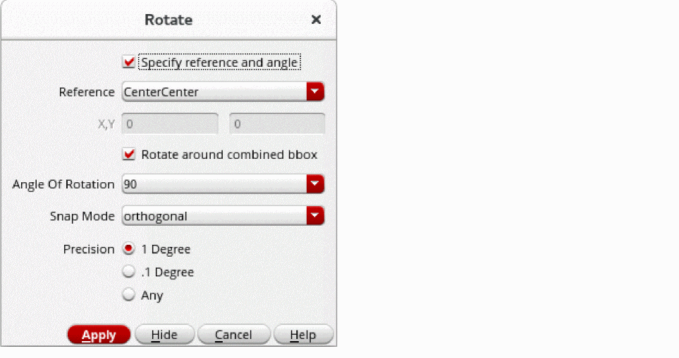

Object Rotation
Using the Rotate functionality, you can change the orientation of most geometric objects. You can rotate an object at a specific angle and a specific reference point on the canvas.
The following table describes the support available for rotating various objects.
When rotating multiple objects as a group, you can choose to rotate them around their own respective centers or around the center of their combined boundary box. Objects that are on-grid remain on-grid after rotation. The Rotate around combined bbox option in the Layout Editor Options form and in the Rotate, Rotate Left, and Rotate Right forms helps you specify whether multiple selected objects need to be rotated around their combined bounding box.
You can use the following Rotate commands to rotate objects in pre-selection and post-selection modes. You can access the commands from the Edit – Rotate menu option or the Rotate option on the shortcut menu displayed when you right-click on the canvas.
- Rotate: Rotates an object or multiple selected objects as a group at the specified reference point and angle. You can use the Rotate form to specify the reference point of rotation and whether multiple objects need to be rotated around their combined bounding box. You can also specify the angle, snap mode, and precision of rotation.
- Rotate Left: Rotates an object by 90 degrees in the counterclockwise direction. In pre-selection mode, you can use the Rotate Left form to specify the reference point for rotation and whether objects need to be rotated around their combined bounding box in case multiple objects are selected.
- Rotate Right: Rotates an object by 90 degrees in the clockwise direction. In pre-selection mode, you can use the Rotate Right form to specify the reference point for rotation and whether objects need to be rotated around their combined bounding box in case multiple objects are selected.
While editing an instance or a mosaic, you can specify whether the Rotate command uses the bounding box, place and route (PR) boundary, or snap boundary (if defined) as the instance border for rotation. For example, if you have a standard cell with a large label that extends well beyond the PR boundary, the bounding box of that cell will be much larger than its PR boundary. In the Layout Editor Options form, you can set Instance Editing Mode to P&R Boundary to have the Rotate command ignore the bounding box and consider only the PR boundary for the rotate operation.
To rotate any object in 90-degree increments or to mirror an object, you can also use the Move, Copy, or Paste commands. For Copy and Move commands, the Rotate icon on the Edit toolbar is disabled.
Related Topics
Rotating Objects by Using the Rotate Form
To rotate objects by using the Rotate form:
- In your layout design window, choose Edit – Rotate – Rotate.
-
Press
F3to open the Rotate form. -
Select the Specify reference and angle check box.
The reference options in the form appear enabled.
 -
From the Reference list, select the point of reference around which you want to rotate the objects. The default is CenterCenter.
You can choose Custom to specify the X and Y coordinates around which you want to rotate the objects. - Ensure the Rotate around combined bbox check box is selected if you want to rotate multiple selected objects around the specified reference point of the combined bounding box of the objects.
- In Angle Of Rotation, select or enter the angle at which you want to rotate the objects.
-
Select a snap mode from Snap Mode for rotating the objects.
Valid values are anyAngle, diagonal, orthogonal, horizontal, or vertical. - Select the precision of the snap angle from Precision.
-
Select the objects that you want to rotate on the canvas.
The objects are rotated according to the settings specified in the form.
Related Topics
Return to top